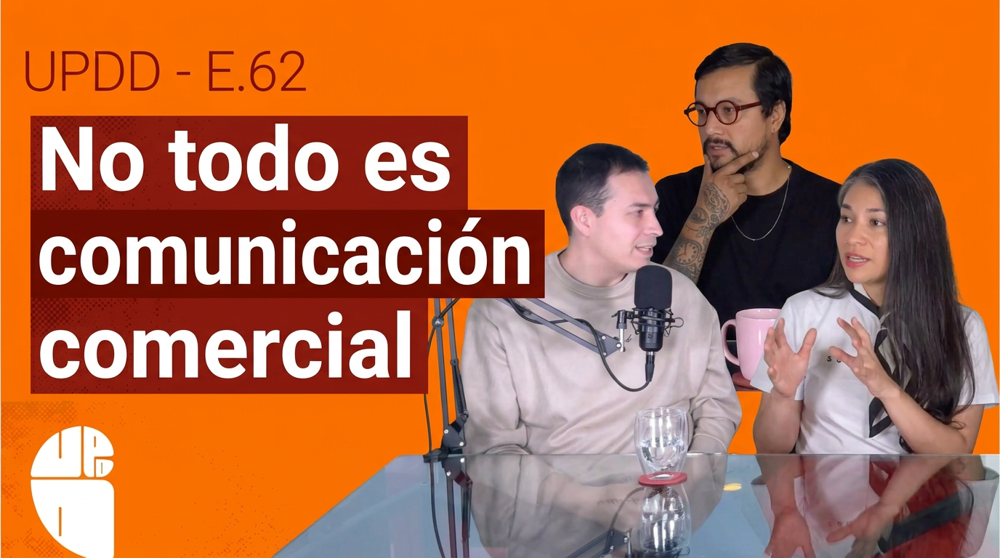
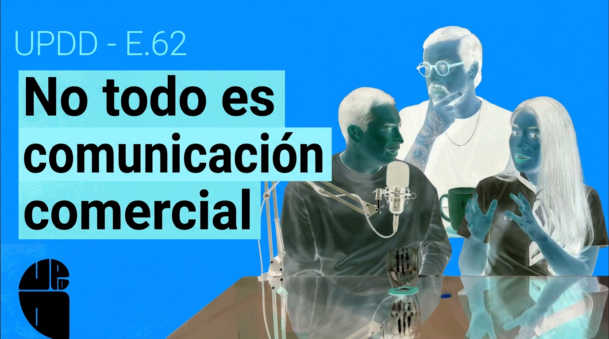

VISUAL / 01Del estudio a otro universoRodaje real → mundo digitalANIMACIÓN PRÓXIMAMENTE
ESTUDIO CREATIVO / VFX + IAMÉXICO · SIN LÍMITES
EL MISMO
PRESUPUESTO.
OTRO UNIVERSO.
Por lo que cuesta un video tradicional,
hagamos uno que parezca imposible.
01 / PLAY THE IMPOSSIBLEIMAGINA TU PRÓXIMO VIDEO AQUÍ
LOS MEQUETREFES / SHOWREELMENOS LÍMITES.
MENOS LÍMITES.
MÁS CINE.
Selecciona tu video para reproducirlo aquí.
DIRECCIÓN DE ARTE · LIVE ACTION · MUNDOS DIGITALESHECHO POR HUMANOS. POTENCIADO CON IA.
02 / MENOS PRODUCCIÓN. MÁS IMAGINACIÓN.
VISUAL / 02De la idea al conceptoBoceto → dirección de arteANIMACIÓN PRÓXIMAMENTE
VISUAL / 03Una sesión, muchas posibilidadesCámara · luz · acciónANIMACIÓN PRÓXIMAMENTE
VISUAL / 04De la toma al efecto finalOriginal → composición VFXANIMACIÓN PRÓXIMAMENTE
01 / 04
ARRASTRA PARA EXPLORAR
03 / DE LA TOMA A LA IDEA
LA REALIDAD ES
SOLO EL INICIO.
Una toma. Dos posibilidades.
Desliza y descubre la transformación.


‹ ›
ARRASTRA CON EL MOUSE O CON EL DEDO50 / 50
04 / UN GRAN VIDEO. UN COSTO ATERRIZADO.
NO NECESITAS
UN PRESUPUESTO
DE OTRO PLANETA.
El costo de un video live action.
El potencial de algo mucho más grande.
INVERSIÓN DE REFERENCIA
$30,000 MXN
aproximadamente por video
- Concepto y dirección de arte
- Sesión de grabación de 4 horas en estudio
- Edición y postproducción con VFX + IA